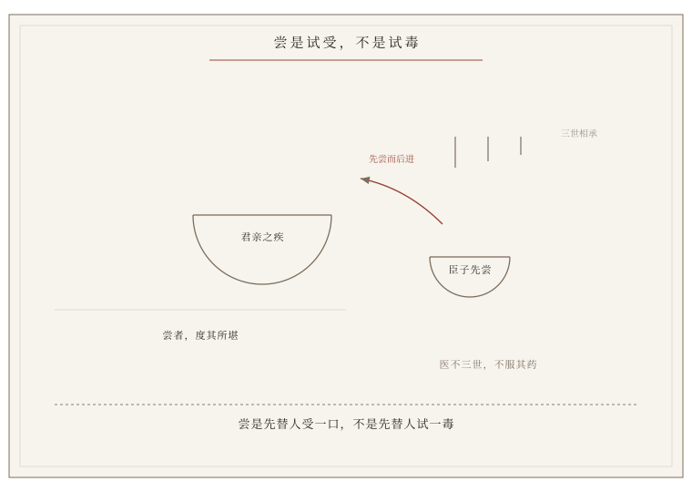

曲礼下 · 二·六十二 · 第 185 课
君有疾饮药，臣先尝；亲有疾饮药，子先尝。医不三世，不服其药。注「尝度其所堪」「慎物齐也」。
说什么事：尝药，与择医。
落在哪一层：礼，兼及礼意。论以身为试。
为何编在此位：上两节论谏与随，此节论疾与药。皆在君亲之侧最切近处。
【经】君有疾飲藥，臣先嘗之。親有疾飲藥，子先嘗之。醫不三世，不服其藥。
【注】嘗，度其所堪。慎物齊也。
【疏】凡人病疾，盖以筋血不调，故服药以治之。其药不慎于物，必无其征，故宜戒之，择其父子相承至三世也，是慎物调齐也。又说云：「三世者，一曰黄帝《针灸》，二曰神农《本草》，三曰素女《脉诀》，又云夫子《脉诀》。若不习此三世之书，不得服食其药。」然郑云「慎物齐也」，则非谓《本草》《针经》《脉诀》，于理不当，其义非也。
尝 注「度其所堪」。先饮少许，看能否承受。
三世 注「父子相承至三世」。疏另存「三世之书」一说。
慎物齐也 齐，剂也。慎重于药之调和。
不服 不服用。
君有病要饮药，臣先尝；亲有病要饮药，子先尝。医生若非三世相承，不服他的药。
此节两句，一是以身为试，一是以世为信。前者极近，后者极缓。礼在君亲之侧，前一句讲人，后一句讲术。
第一层 尝之为度 注「度其所堪」，不是试毒，是试受。若药性太峻，君亲不能受，臣子先受之。此礼之至近处。
第二层 三世之义 注「父子相承至三世」。礼信的是传承，不是名气。三世者，经验已经过了两代人的检验。
第三层 两说之取舍 疏既存「三世之书」之说，又断其「于理不当，其义非也」，从郑注「慎物齐也」。注疏并存异说而断其非，是读礼常见的一步。
第四层 慎之为礼 一剂药之调，礼都要管。此见礼不止于大事，它一直管到碗边。
与今日何干 把最亲的人的药先喝一口，与信一个行医三代的人——两件事今天都还在。
| 左 | 右 |
|---|---|
| 君有疾，臣先尝 | 尝，度其所堪 |
| 亲有疾，子先尝 | 同礼而异其亲 |
| 医不三世 | 父子相承至三世 |
| 不服其药 | 信传承，不信虚名 |
| 慎物齐也 | 齐，剂也 |
| 三世之书说 | 疏断其非郑义 |
画两只先后相接的碗形：左边一只稍高（示君亲之碗），右边一只稍低（示臣子之碗），右碗的碗沿伸出一道短弧指向左碗（示「先尝」）。两碗之间上方画三代相连的短竖（三段，逐段略低，示「三世」）。两碗之下画一道横线作案。不写文字、不画人。赭色只用在右碗的碗沿与那道短弧。
